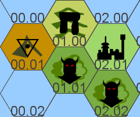

When a Wandering Isle result is given as a naval encounter, roll a d10 - the corresponding island is encountered. Likewise for Sea Monsters. Optionally, those hopelessly lost at sea always encounter a Wandering Isle.
Wandering Isles, once found, stay there for 2d20 days. Those without obvious forms of locomotion are consumed by sea-mists which leave no trace. Those travelling under their own power can be tracked - although this trail is lost 1-in-6 per day.

Only 02.01 and 02.02 have suitable landing points - the rest present only forbidding cliffs to prospective explorers.
Every 12 hours in 01.01 and 02.02, an Encounter roll should be made. Once-Men are always hostile to outsiders.
| d100 | Encounters |
|---|---|
| 1-50 | 2d20 Once-Men |
| 51-60 | 2d12 Herd Animals |
| 61+ | No Encounter |
The faces of the mountain are sheer forbidding rock, jagged and sharp. No plant life clings to it. It is sterile.
Climbing the mountain takes 1d6+4 days and is dangerous - a Constitution test on 3d6 being made each day. Expenditure of equipment (iron spikes, ropes etc) allows one of these dice to be re-rolled. Those failing take 1d6 damage from exposure and general exertion. If an 18 is rolled, disaster strikes - the failing individual plummeting to their death. Healing is impossible during the climb.
From atop the mountain, the air thin and wind strong, all of Greschott can be seen, pooling out as if from the mountain itself. A feeling of insignificance consumes those taking in the view, as if being seen in turn. Each is left with a mark - a scar in the shape of mountain appearing on the body. Those showing this mark are untouchable to the Once-Men. The mark can be evoked once per week to cast Protection upon the bearer, protecting them from anything not from Greschott.
Climbing down the mountain takes the same number of days minus 1 - or they may find a new route, taking 1d6+3 days.
Deep in the foothills, below the watchful glare of the mountain, a squat pyramid of stone lurks in the valley between two hills. It measures 80’ square, the point reaching 45’. The sun touches it only an hour a day - all the rest of the time it is in shadow. A heavy door of lead set into a protruding section is the only irregularity in the rough stone surface. The door has a large keyhole - the only method for opening it is using the key stolen from the isle. Those trying to beat the door down find it reverberating like a drum - summoning 71 Once-Men from the woods, playing their own drums in turn.
Within the tomb is a single chamber, the interior surfaces all silver polished to a mirror-finish. Within is a simple boat, complete with sail and rope. It rests on logs cut to support it specifically. Within the vessel lies a corpse, withered with the years yet untouched by rot or decay. It wears robes of trimmed furs, holding a javelin with a head of crystal and a bronze sword crossed upon its chest. Atop the head is a circlet of beaten gold, with designs of a mountain upon it - worth 2700sp. Each finger bears a ring with a different geometric skull upon it, each worth 300sp.
When any of these items are touched, the reflections of the corpse - repeated thousands of times - awaken, whilst the original remains dead. These reflections begin attacking the would-be thieves, wounds opening upon the originals and reflections alike. Each thief remaining in the chamber takes 2d20 damage per round they remain.
The javelin is light and short - more suited to hunting than war. Against beings of the ocean and sky it takes +3 to hit and deals an additional +2 damage. Used against such creatures, it returns every d6 rounds, slithering like a snake. Against humans, it is but a javelin.
The bronze sword appears unused - more like a beam of light than something material. Against humans not of Greschott it adds +2 to hit and damage. It thirsts for the blood of the outlander - on a miss, it makes an additional attack against the nearest ally or the wielder if none are nearby. Against those of Greschott is it harmless.
Within the boat, further grave-goods cluster at the feet of the corpse (Tomb IV):
Throughout this hex, drums can be heard d4 hours after entry. They move closer - a band of 67 Once-Men hunts the invaders by scent, fanning out through their forest home and cowing smaller bands.
Stone tables, blood-stained and surrounded with bones, fur, skin and sharp fragments of rock are scattered everywhere - above each a hole has been hacked into the canopy, giving a view of the mountain.
Deep in the woods, 10 mauled human corpses, trampled into the mud and draped over rocks - their equipment hidden beneath small cairns orientated towards the mountain. These items reek of piss and shit, and have been broken by knowing hands.
Surrounded by a network of roads inland and a spider-like protrusion of jetties to the sea, the Empty City remains pristine. No ivy consumes the buildings, no grasses hide the roads. Silence reigns.
Within the harbour, a huge burnt skeleton of a ship, gold ornaments still visible.
All the buildings of the city are alike - octagonal, made of stone. Only their height varies, seemingly stacking the same section atop itself. Each such section has three windows, set with glass.
Within these buildings is smashed furniture, old bloodstains, copious amounts of fur and hair, deep gouges in the stonework. Nothing of value remains - cast into the sea many centuries distant. An hours searching returns d6-1 small stone idols depicting aquatic animals with benevolent smiles.
Those spending the night here awaken to the sun rising behind the mountain, appearing as a huge red eye with a triangular pupil glaring down.
Amongst the maze of streets and repeated buildings, 2 human corpses - dead of dehydration. They have 2 bows, 2 swords, 2 shields, 60 arrows, 12 torches and 50’ of rope.
The heavy forest marches to the edge of the land and glowers over the beaches, a thin strip of pebbles before the sea. Upon the beach is a Karvi, emptied of supplies and sailors.
From the forest, a cacophony - animal sounds mingle with roars uttered by some admixture of human and beast. Bound the trees are corpses - huge, deep-chested beasts with snarling fangs. Of some remain nothing but bones.
A clearing contains 3 human bodies, rent open, sundered maille links surrounding them. Between them, they have 2 swords, a battle axe, 5 javelins, 2 shields, 2 lengths of rope, 4 sacks, 3 snares and a small silver mirror.
HD 3 / AC as Unarmoured / Damage 1d6+1 Club or 1d6 Javelin
Beneath long coats of fur, powerful muscles coil. From their jaws, long teeth, once suited to cooked foods but now perfect for stripping flesh from bone still bleeding. Bands without their leaders flee fire and artefacts of the Empty City. Those with their leaders instead enter a fear-fuelled frenzy - mobbing those carrying the offending items and attacking twice. Those in such a state are easier to strike - attacks are at +2.
Groups of 15 or more are lead by either a 4HD Spiritualist (60%) or a 6HD Warrior (40%), both laden with powerful curling horns. Bands of 30 or more have 1d4 of both.
Spiritualists always throw javelins. If they can see the Mountain (40% chance in any given area of the Forests), they exhort their followers - all attack at +1. Bands led by Spiritualists try to capture invaders for examination and sacrifice.
Warriors wield warhammers of stone, dealing 1d6+3 damage. They wear armour of dolphin-bone (as Maille), and their bellows cause Morale tests in hirelings.
None will enter the Empty City.
Screams, warped and amplified and distorted, echo across the waves. The strange stone of the Screaming Rock is filled with winding tunnels which resonate with human screams, broadcasting them miles around.
Atop and within the rock dwell 46 Ogres, who wish to possess all screams. The rock floats, untethered from the sea floor, seemingly magnetically attracted to inhabited coasts.
Whenever the Screaming Rock is encountered, it is either en-route to the nearest village-sized settlement (70%) or fleeing it, the ‘hold’ filled with the population of the village, minus any killed or lucky enough to escape. The Screaming Rock is slow, travelling only 2 hexes a day.
The Ogres of Screaming Rock do not kill quickly - they lovingly coax every possible sound from their captives before devouring them, varying their diet of fleshy crabs which dwell in the flooded levels of the Rock. On average, only a single captive is killed a day.
Those not currently being tortured are held in a single large vault towards the centre of the Rock, wherein some have learnt to hide and thrive across long decades in the dark wet. They prey upon their fellow prisoners, hiding the bodies and slowly consuming them over weeks. Worse than these, some come to see the music in the screams which wash over them night and day. They come to desire them. When the hold is next opened, another Ogre joins the crew.
Above the beach of this pleasant green isle, a stone temple carved heavily with iconography of striving and overcoming in all physical and mental arts. Within dwell 89, each wearing a white featureless mask and heavy voluminous robes. They introduce themselves as the Observers, spending their day here in sacred contemplation of the turning of the celestial spheres away from the petty wars and kings of men.
Visitors are welcome to stay upon the beach, although entering the temple grounds is strictly forbidden. For a donation of 4000sp in cash or goods, an Observer will accompany the party. They are able to cast Clairvoyance, Darkness, Light and Sixth Sense 1/day, having had all the modifications required to do so. Those selected for such duty say little and demonstrate no initiative nor self-preservation. Beneath the robes, much of their skull and brain has been interfered with. The Observers will waive the donation in return for healthy bodies, hands keen to grasp and measure and learn.
Within the temple more extreme examples of the Observers art linger - men with tendons cut that they crawl like hounds, teeth replaced, jaws broken and elongated. Others are swollen with stolen muscle, lifespan reduced to years as their hearts falter under the pressure. In an inner-sanctum is stashed the culmination of the art, formed of many fused together into new life, an abomination cowed by their cruel instruments of control.
Within the blood-stained halls, surgical tables and jars of internal organs, the wealth they have gathered (Temple III):
31 footmen (unarmoured), 20 skirmishers, 24 dog-men (as Wolves), 14 half-lives (as Ogres) and 1 abomination (as Golem).
The sky blackens with the presence of the Burning Lung. A single outcropping of burning stone preceded by steam and smoke. In its trail dead sea-life, cooked through, bob. Seagulls flock.
Climbing the Lung is relatively easy, but takes 5 hours. Brittle strands of glass like hair litter the sides of the mountain, as do tear-drop shaped fragments.
The blood of the Lung is a material component for Wall of Fire. The Lung accepts sacrifices, a fist of magma taking what is offered.
Every 1d10 days, roll on the following table to determine the type of eruption. When first encountered, the Lung is always erupting. Results can coincide.
| d100 | Eruption |
|---|---|
| 1-60 | For the next 1d6 days, the Lung bleeds. Lava streams down the flanks, burning snakes of molten rock extinguishing themselves in the sea. |
| 61-85 | For the next 1d6 days, loud explosions rock the area. Flecks of lava and semi-molten rocks are flung continuously from the peak of the Lung, accompanied by plumes of smoke and ash. Those nearby have a 1% of being struck for 6d6 damage per Turn, increasing by 1% for each Turn spent climbing the Lung. |
| 86-95 | For 1d4 days, as prior result, with a lack of ash and smoke. After this, an immense outpouring of ash and gas forms a deadly pyroclastic flow. Everything on the Lung is annihilated. The flow moves slowly, triggering steam-explosions upon the waters surface. Those trying to sail away must be already rigged, or have rowers ready. Anything within 1 hex is reached by the flows and destroyed in 6 hours. |
| 96+ | For 1d6 days, the Lung grows huge boils of rock upon its outer faces, these shifting and glowing in the darkness of the night. After this, all explode, releasing torrents of lava and immense pyroclastic flows. All upon the Lung are annihilated instantly, as is anything within a single hex. The pyroclastic flows reach everything within 3 hexes within 4 hours. Ash deadens the sun for the next 1d12 days, allowing creatures of the night to roam the earth without fear. |
First you will see the birds in their thousands, filling the sky, diving down for their feasts. Then you will see the sharks, moving through the cloudy water - all converging on a single point. Then you will see the Corpse-Raft. Untold thousands of bodies, water-bloated and animal torn, tangled in an embrace unseen in life. Sailors say this is where all those left overboard reside, death magnetic and misery shared.
Upon this isle hop birds over-gorged, unable to fly. Beneath the raft of corpses sharks do not fight - there is enough to go around. Gore-coloured crabs pick amongst the corpses, selecting choice cuts with their pincers.
In a house of bone dwells a hermit, gaunt and pale. They try to name the dead - a hopeless task. They beg visitors for four names each, to be given quickly and without repeats. Those unable or unwilling he curses to join the dead here. This curse awakens 4d20 Zombies from the Raft per round, who drag the living down amongst the bodies for slow death trapped in the iron grip of the dead. The hermit feeds and waters such unfortunates. If the Hermit is killed, the curse remains in effect - the dead will just remain nameless.
Those escaping under the effect of the curse find the Corpse-Raft following them - appearing on a 4-in-6 in any sea journey, separately from normal encounters.
Knowledge of this location is worth 8000sp to the Corpse-Ship of Faroe. If the Corpse-Raft moves before they arrive, they assume a trick and relentlessly hunt the liars.
No vegetation marks this bleak rock, stairs cut directly into the stone allowing the intrepid to clamber to the top. The jagged, crag-ridden walls of stone are marred by wide holes, seemingly fresh-scratched.
Atop the stone, a withered form at the centre of a mandala of gore. Scars crawl like caterpillars, fresh-white skin standing out from blister-pocked redness - a kiss from the sun. A flimsy chain of gold hold their left foot to the stone. They are unseeing, dead to anything but the pain of being eaten again and again.
As the sun dips, the beings within the stone stir. Soiled feathers, iron beaks, eyes peering from a form huge, wings muscled all wrong to allow climbing and crawling but denying them flight. Two of them, seeking their nightly feast atop the rock. If they find their quarry missing, they wait - in 5 days they will have starved enough to fly again, tracking their prisoner to return him to this forgotten place. As they pursue, they shriek, driving all birds before them in a wave of panic and jealousy.
A fistful of flesh from the figure, when eaten, is the equivalent to Cure Light Wounds. He cannot be killed.
HD 8 / AC as Maille / Damage 1d6+2 / Re-rolls HD at the beginning of each round. They lose this ability if they have not eaten from the figure in 24 hours - a single bite is enough to restore it.
No harbour nor jetty invites visitors to this wooded isle some six miles long. Amongst the trees, buildings of dry-stacked stone, mossclad, many without inhabitants for long, long years.
The air is heavy with an aroma of mint, the green leaves of the plant teeming where the trees do not choke out the sun. Over these plants step 16, the remnants of an ancient order forgotten. All are Werewolves. Amongst them, they speak a dialect combining Pictish, Brythonic and Ruislip - intelligible but confusing to any who speak one of these tongues.
Cenau leads them, beard sweeping the floor before him. He believes it best that the Werewolves have been forgotten - better than being used as a chess piece by kings. He would answer a call from the Druids - he only remembers them before they fell. Ederna advocates that they must return and re-establish themselves to resist the foreign kings she fled as a child, shipwrecked upon this isle and inducted. She remembers the warriors of Thorkell all too well. It is their law that all who visit without summons to aid the isles must join them or die. The bones of those who refused are gnawed, strung up as charms that new inductees may contemplate the cost of their curse.
Eoghan and Sadb hide their pregnancy from the others. Such a union is forbidden against the foundation of a terrible dynasty of wolfkissed lords. Those captured and held as prisoners whilst their fate is discussed could convince them to aid in an escape.
None of them know of Ailín, the descendant of a renegade who refused to retire to the island.
The overpowering smell of mint aids in their training, allowing some modicum of control. After 3 months of study, they learn to harness their transformations. Then come years of ethical instruction.
A flat bowl of stone, ever-emitting a terrible howling shriek. Within it all is a chaos of air and its victims, carried and bludgeoned and shattered and collided together until it joins the mass of flesh, wood, water, earth, all matter, fused together in the centre of the anarchy of gust and breeze. Within this dire sphere grows a brood of child-winds, caressed gently by those kinder breezes which stir no violence but touch all the world with grace.
Any attempting entry to the bowl are snatched up and away by the winds, dying in 2d6 rounds. One who survived could make friends with 19 of the child-winds, and be born aloft on their legion of gusts, eager to please. Many a wizard has died trying.
HD 1 / AC as Plate / Damage 1d6 / Invulnerable to tangible weapons.
A ruined hulk of metal in unearthly hues cuts through the waves. The intelligence that guides it has been blinded, once-proud sensors cut down, probing tendrils wrenched free. Upon the surface, scales of this metal sit loose, ripe for the taking if not for the servitors that remain - the remnants of a crew destroyed in an apocalyptic battle which left only this once-proud foundation. Strange arcs of energy course from metallic veins split open - those struck by it losing 1d4 HD as their bodies are wracked and burnt and twitch like puppets.
Those trying to take any of these scales attract the attention of 2d4 Servitors, who seek to reclaim what is theirs. Stolen away, these scales can make shields which give a -3 penalty to all strikes against the wielder - wondrously light, yet harder than iron. Each is worth 8000sp.
The Servitors are undulating centipedes of metal, wide about as horses. They are studded with grasping claws and scissor-like appendages. When not hunting intruders, they attempt to repair the Fortress as it crumbles around them.
HD 6 / AC as Plate and Shield / Damage 1d6+2 / On a minimum damage result, a Servitor clamps on to its target who takes 2d6 damage each round thereafter as the scissor-limbs do their work. A Strength test on 5d6 is required to break free - for each ally assisting, this is reduced by one dice.
The Moon may only be encountered at night, and disappears at dawn. Those still upon it travel with it into the sky. During a full moon, it cannot be encountered.
As the moon waxes and wanes, those hidden sections return to the earth to cool in the sea, floating atop it lest it become too water-logged and never rise again.
Those travelling to the sky on the Moon suffer the with terrible cold - those not wearing cold-weather garb lose 1HP per day, and cannot heal without being warmed through first.
The surface of the moon is choked in a fine dust which covers everything, filling the deep craters and producing immense dust-seas. Between the seas teem the Lunar jungles, the silver leaves shading the dust-fixing roots. Great plains of grey rock, broken only by smaller craters and crags of rock naked of vegetation give way to swamps filled with quicksilver, reedy plants sprouting from these poison waters.
When travelling the moon, generate hexes as needed.
During a new moon, 6 hexes are available.
A crescent moon offers 5 hexes.
A quarter moon has 4.
A half moon has 3.
A gibbous moon has 1.
Beyond these hexes is only the terrestrial sea.
| d6 | Terrain | Feature Chance |
|---|---|---|
| 1 | Dust Sea | 0-in-6 |
| 2-3 | Great Plain | 4-in-6 |
| 4-5 | Lunar Jungle | 5-in-6 |
| 6 | Quicksilver Swamp | 3-in-6 |
Whilst in a Quicksilver Swamp, an Agility test on 2d6 must be made each hour - failure indicates falling into the silver waters. Those so doing losing d3 Constitution per day for 2d4 days, sickening quickly and growing pale. Those surviving are able to eat the flesh of Lunar beasts and plants - others gain no sustenance from such strange fare.
There is also the dark side of the moon, but it is an anathema to terrestrial life - killing colds, conflagrations of heat and the crawling creatures that dwell there. None have been there and survived.
Carved from the stone of the Moon, one of the terrible prisons of the Moon-Beasts. 2d20 of them lair here, of who 2d6 are out hunting. They will return in 3d6 Turns.
In the torture-cells are 3d6 Lunatics, 2d6 Wolves, 2d100 Rabbits, 3d6 Lunar Locusts, a 10% chance of 1d4 Darksiders and a 5% chance of a Moon-Sorcerer.
Buildings of lunar stone, stacked and now uninhabited. Within they are carven with flowing, amoeboid figures consuming nine-limbed creatures who dwell in settlements. The amoeboid creatures seemingly emerge from rivers, lakes and seas.
The ruins of a camp, either terrestrial wanderers (25%) or Lunatic (75%).
A band of Lunatics make camp here around a rare spring of freshwater, produced by a colony of Moon Worm larvae within a crater.
A tower or fortress of a Moon-Sorcerer, who is present 90% of the time alongside their retinue - excepting Moon Worm riding Sorcerers. A negative reaction roll means they charge visitors with a mission in a nearby hex under pain of death. Those succeeding are paid in 3 random potions, whilst those shirking this mission are hunted. A positive reaction roll indicates willingness to trade for magical components in return for wards, and a friendly result represents willingness to teach their spells and wards in return for missions completed.
Those with 1-2 HD have a Magic User I treasure type, 3-4 Magic User II, 5-6 Magic User III and 7-8 as Magic User IV. They will use any magical weapons and armour if possible.
A mountain, inert, dead. Once a Moon Elemental, the mighty cousin of an Earth Elemental, now it sits and gathers dust. The heart of such a corpse could be used to summon an Earth Elemental in terrestrial lands.
A riverbed, cutting through the land.
| d100 | Canal Filled With… |
|---|---|
| 1-30 | Moon-Dust. |
| 31-50 | Quicksilver. |
| 51-55 | Fresh water, from Moon Worm Larvae colony. |
| 56+ | Nothing. |
A tunnel, 25-40’ wide, emerges from the earth. 40% of the time they are active, guarded by 3d20 Darksiders awaiting the other raiding bands to return. Otherwise, they are dead and empty. Travelling through the suffocating darkness within for 2d6 days, one would find themselves upon the dark side of the moon - an environment impossible to live within.
The wreck of a sea-vessel, run aground on the Lunar surface. 90% of the time they will have already have been scavenged - otherwise, they have Bandits II treasure in their hold and a 40% chance of 2d6 surviving crew, hailing from a random land.
A gilded metal frame above a pair of skis, these ancient craft allow travel atop the Dust Seas. Each craft has room for 4d6 people.
Every 12 hours, an Encounter roll should be made. Use the location, reaction and surprise to determine goals as needed - most do not wander aimlessly.
| d100 | Great Plain Encounter |
|---|---|
| 01-03 | 2d20 Darksiders. |
| 04-16 | 3d20 Lunar Locusts. |
| 17-26 | Lunatic Band. |
| 27-32 | 1d8 Moon-Beasts. |
| 33-35 | 1 Moon-Sorcerer. |
| 36-37 | 1 Moon Worm. |
| 38-50 | d6*100 Rabbits. |
| 51-55 | 4d8 Wolves. |
| 56-60 | Conflict between two groups. |
| 61+ | No Encounter. |
| d100 | Lunar Jungle Encounter |
|---|---|
| 01-05 | 2d20 Darksiders. |
| 06-27 | Lunatic Band. |
| 28-35 | 1d8 Moon-Beasts. |
| 36 | 1 Moon-Sorcerer. |
| 37-49 | d6*100 Rabbits. |
| 50-55 | 4d8 Wolves. |
| 56-60 | Conflict between two groups. |
| 61+ | No Encounter. |
| d100 | Quicksilver Swamp Encounter |
|---|---|
| 01-02 | 2d20 Darksiders. |
| 03-10 | 3d20 Lunar Locusts. |
| 11-18 | Lunatic Band. |
| 19-28 | 1d8 Moon-Beasts. |
| 29-30 | 1 Moon-Sorcerer. |
| 31-35 | Quicksilver Elemental |
| 36-38 | Conflict between two groups. |
| 39+ | No Encounter. |
There is a side of the moon hidden from terrestrial eyes. In truth it is not always dark - scoured by the sun as often as exposed to void. There exists a shadow-ecology of rapacious life bent on murder and domination. How one such species survived long enough to form society is untellable - but they dig their tunnels through the dead rock of the Moon to raid the visible side.
Bony creatures draped with flesh reminiscent of a black plastic bin-bag, nine-limbed, wielding swords and clubs of bone. Each limb is an arm, alternating between locomotion and manipulation. Their skulls are long, mouths a tangle of fangs.
Whenever Darksiders are encountered, an active Darkside Tunnel is nearby.
Groups of over 12 are led by their priests. They wear the skins of their kills as trophies, the faces of man stretched over a form alien. Once per day, these priests may shriek a proclamation of predation, allowing all in earshot to re-roll failed attacks that round.
Darksiders never test Morale for taking losses as a group - each tests individually when injured. No fellow-feeling motivates them.
HD 3 / AC as Maille / Damage 1d6 / Makes two attacks per round.
Across the plains the locusts hop and skitter, seeking the saplings on the edges of the Lunar Jungles. Grey, the size of horses, they are herbivorous. Once every year, when the time of the Laying comes, they seek warm flesh to bed their eggs in - a week of terror and bloodshed for all mammals upon the Moon.
HD 2 / AC as Leather / Damage 1d6
Those who left the Earth and adopted the Moon, living nomadically with their Locust mounts and captive droves of rabbits. They speak their own tongue, but are used to communicating in gestures with visitors from Earth. They happily trade food and information for terrestrial metals, scratching maps and diagrams into the dust. Few are ever seen without their heavy body-suits of furs, obscuring their form nearly entirely.
They are encountered in bands of 1d100, d20 of whom are children. There are two Lunar Locusts per adult, saddled with rabbit-fur saddles and neutered against the Laying. They carry lances and shortswords of chitin. Half have shortbows of silvery lunar wood. d12 wear Moon-Beast shell armour (as Maille) whilst the rest have Leather. Only those who have survived the quicksilver-sickness are entitled to wear this armour - a secret warrior-society, they act as envoys between the bands. Some will sport weapons of metal, bearing them proudly, festooned with family heirlooms and trophies taken from conquests.
Some bands (25%) have begun taming the Wolves of the Moon, and have 2d12 of them amongst their number.
A scant few (5%) forgo the Lunar Locusts and instead ride the Moon Worms, using brass hooks to keep it above the surface.
Rounded forms encased in smooth silver shell and filled with muscle and malice. Their six-eyed heads are fronted with a outcropping of finger-length tentacles which twitch like a dogs nose as they taste the air. They feed upon pain, abducting other beings to torture them within their prisons, making delighted choking-braying-drowning sounds as they bask in it.
HD 5 / AC as Maille / Damage 1d6+2 / Attacks are only made to subdue - those surviving heal at double-rate.
The ultimate solitude for an aspiring sorcerer is upon the Moon. Many elect to stay, sneering at at their earthbound cousins for their graspings at power.
When travelling, most Moon-Sorcerers have a retinue.
| d100 | Moon-Sorcerer Retinue |
|---|---|
| 1-20 | None. |
| 21-60 | Bound or allied band of Lunatics. |
| 61-80 | 2d6 Moon-Beasts, bound by unspeakable agreements. |
| 81-95 | Riding upon a Moon Worm, ensorcelled for this trip. |
| 96-00 | 3d6 Darksiders, a traitor to all life. |
They have 2d4 HD, and can cast 2d6 different spells, carrying d4 material components for each. After the number is generated, count up the following list to determine which spells. One of their spells is 1/day - determine this randomly. Those with 1-2 HD are unarmoured, 3-4 AC as Maille due to wardings and 5+ as Full Length Maille.
Burrowing through the rock and deriving sustenance from lithic sources, why the Moon Worm emerges is uncertain. It ignores the life that crawls upon the surface when not summoned through rhythmic drumming - indistinguishable from the hoofbeats of a horse. This sound drives it wild without pacifying herbs gathered from the Quicksilver Swamps.
HD 12 / AC as Plate and Shield / Damage 2d6
The flowing metal of the swamps sometimes develops some limited sentience - cursed to self-awareness for a brief weeks, Quicksilver Elementals explode through life, trying to experience everything as quickly and intensely as possible. Mercurial in mood, devastating in rage and infinitely kind.
HD 6 / AC as Unarmoured / Damage 1d6 / Unaffected by normal weapons. Those struck must make a Physique save or acquire the sickness of the Quicksilver Swamps.
In the Lunar Plains and jungles, huge masses of terrestrial rabbits chew the stubby silver grass. They are the same as their earth-bound kin in all respects but home.
The wolves of the Moon are smaller than their terrestrial cousins, but are long-legged and fleet of foot. They gather in much larger packs, numbering 3d20 and do not fear men - food is food in the bleak lunar plains. In dire times they pull lots, the losers cannibalised willingly by the rest.
HD 1 / AC as Leather / Damage 1d6
From a wide, flat shell of stone, 100’ across, emerges four fleshy limbs - immense flippers of heavy muscle infested with all manner of barnacle and worm and abyssal growth unused to the sun or air. A long, sinuous neck, wide as a wagon wheel, supports a head shrouded in twin blades of stone worn smooth. Using these blades, Eliu the Juggernaut smashes any vessel approaching them before descending back beneath the waves. Their neck and flippers are vulnerable to normal weapons, the neck having 40HP and the flippers 20HP each. However, whenever they are struck Eliu dives back beneath the waves if their flippers are still functional. They re-emerge in d4 hours, aiming to capsize any vessels with the great wave formed when they breach the surface.
Eliu is blind, and only senses vibrations through the water. When striking vessels, they deal 1d3 HD of damage.
Those who fled the fall by abandoning the land, full of pride and rage. Bitter princes haughty in their maille hand-linked by thralls whose descendants now rule Giantish dominions.
They see metalwork as a stolen art - those accosted are allowed to sail by if they cast all worked metal possessions into the sea, the new kingdom of the giants. Beneath the waves, impossibly long legs reach down into the unknown blackness of the ocean depths. As they approach the shore, they grow no taller. Gills gum the air wetly from their throats.
HD 12 / AC as Full Length Maille / Damage 2d6+2 (1HD to vessels)
The face of a lobster bears no malice as it snips the captain in half, no hate as it tears down the mast, no rage as it sweeps away the oars. It does not prey upon the crew of these vessels left aimless - they are simply left to die.
The first story of the Wrecking Lobsters is that they themselves are lost, and are embittered that other sea-treaders might have a destination and the means to get there - or so the story goes.
The second story of the Wrecking Lobsters is that they are searching each vessel for a stolen cousin, vanished by fishermen long ago. This is why they tear apart the deck but leave the hull intact - or so the story goes.
The third story of the Wrecking Lobsters is that they herald the sea rising up to consume the land once more - they are a long, slow declaration of war atop the waves, or so the story goes.
When more than one appears, they do not collaborate - they compete.
HD 9 / AC as Full Length Maille / Damage 1d6+3
1d3 appearing.
Mist-wreathed timbers slip silently through the waters, bearing a cargo of cyclopean beings, their voices like thunder in the close damp quiet that ensures no sunlight touches them - what nightmare might survive the day?
Low ships, without sail, powered only by oars hauled by the crew. Each stands 6’ tall, snouts jutting below their single red eyes. They are bedecked in fur and bronze, helms with horns and old scars received generations ago. Most carry blades and axes, wearing shields depicting a single huge red eye. They speak rarely, their voices loud enough to cause pain - and stunning their opponents.
Encountered, they seemingly meander aimless as if in a dream - or unaware that they have entered some world foreign and hostile. Each vessel contains 4d10 of them - and they travel in groups of 1d4 vessels. If they encounter a settlement, or another vessel, they pillage mercilessly, allowing their fog-shroud to cover any approach. Prisoners are taken aboard and not seen again.
Their protective fog leeches out from the timbers of their vessels, spreading out to 600’. If a vessel was sunk, they would be exposed.
If followed, they disappear after 1d6 days - returning to whence they came.
3HD / AC as Maille / Damage 1d6 / Takes 2d6 damage per round exposed to sunlight. When first engaged in mêlée combat, opponents must make a Physique save or be stunned for 1 round due to the immense volume of their speech.
Rising from the depths at impossible speeds, a glimmering silver ovoid some 60’ from tip to tip. The surface has the lustre of mercury and is coated by some translucent distortion.
When rolling reaction, add 2 if any Lemurian artefacts are carried and subtract 2 if any Atlantean artefacts are carried.
Hostile or Negative Inclination indicate attack - to the death in the case of Hostile, and until the Ovoid is injured in Negative Inclination.
Disinterest indicates an idle pass-over by the Ovoid before it returns to the depths.
On a Positive Inclination, the Ovoid escorts the vessel until it reaches its destination, diving back beneath the waves.
On a Friendly result, the Ovoid hovers beside the vessel, an opening appearing in the hull, allowing entry. Within, the walls of the Ovoid are transparent. There are 8 seats made of hydrating gel, one of which sits before a large smooth ball of glass, within which a cloud of smoke forms faces. By interfacing with this orb, the Ovoid can be controlled at the speed of thought.
It is able to fly 30 hexes a day, survive the ocean depths and has a powerful lightning weapon. However, when the containment field is cracked (i.e. the Ovoid receives any damage) roll its remaining HD - this is how many days it has left to live before disintegrating entirely. Each day further disturbances can be seen in the field, and towards the end the Ovoid makes pained sounds like a dying whale.
In combat, each round it discharges a gout of lighting, dealing 4d6 damage to all within 30’ who are unable to make a Reflex saving throw. This attack always sets wooden vessels alight.
HD 10* / AC as Full Length Maille and Shield / Damage as above/ Immune to normal missiles
* Supernatural HP
From the waves come forms flailing, arms clawing at air and sea alike. They are always drowning. They will never drown.
In their thrashings they can only invite more to die eternal - even pulled free, they drown.
2d100 appear in a single visitation. Any trying to aid them must make a Reflex save or be snagged, pulled in and begin drowning. If they are saved themselves before failing a Drowning test, they return to the land of living.
Tentacles, horn-suckered, slime-cloaked and legion. What maw they serve rests forever beneath the waves, boneless, hideous. Perhaps no mind dwells there - only a mouth opening and closing, clever tentacles feeding their host body as a matter of survival.
For every 10 tentacles attached to a vessel, it takes 1 HD of damage per round. Tentacles crushing the hull make no attacks. If half the total number of tentacles are killed, the attack ceases.
HD 2 / AC as Leather / Damage 1d6 / Those struck by a tentacle have a 2-in-6 chance of being stuck to it. Any attack against the tentacle has a 3-in-6 chance of striking such an unfortunate instead. The slime that coats these tentacles carries a disease - those touching it find their very flesh rotting away, losing 1d3 Constitution for 1d6 days hence if a Physique save is not made.
5d20 appearing.
Each harpoon that bristles from her back is another story of a failed hunt. That few survive to tell the story seems of no matter to Hull-Breaker the whale, swollen with malice.
The first story of Hull-Breaker is that she once was an unwitting turncoat, guiding her fellows on to the beaches for hunters. A youthful hunter began the slaughter without waiting for Hull-Breaker to return to the ocean, and so she learnt the truth - or so the story goes.
The second story of Hull Breaker is that she waited for a decade for those same hunters to return to the ocean. She smashed their ships upon her brow, and bit them in half as they drowned, staining her jaw forever red - or so the story goes.
Each time Hull-Breaker is damaged, she tests Morale - upon failure, she stalks the ship for 2d20 hours before attacking again.
HD 12 / AC as Maille / Damage 2d6+2 (2HD to ships)
On what benthic plain is hatched the nightmare brood of coiling fanged serpents which rise depths uncounted to crush and devour the ships of men that dare tread the open ocean? What might devour them that their blood is poison that burns flesh and wood? What tooth is broken upon their birth-maille? The sea holds no answer.
HD 15 / AC as Maille / Damage 3d6 plus Save or Die from venom / Each round, a Sea Serpent coils itself around a ship, dealing 1 HD per round per coil as it constricts and squeezes. Those striking successfully with slashing or piercing weapons are sprayed with caustic blood, taking 1d6 damage themselves. If 18+ damage is dealt in a single round to a single coil, the beast is severed and flees to the ocean depths to die.
From strata of time unrecorded swims forth a last tyrant, spared only by cowardice. The least of the once-masters of the world, hidden away in some trench, the time has come to emerge and reclaim a dominion stolen so many times over.
A pointed head splits in half, filled with teeth and a tongue ill-suited to command yet used to it. Each syllable uttered falls upon the ears of humans like lead, undeniable but for some spark of resistance fostered deep within and not forgotten. Eyes triple-lidded and wide, ghost-white, roll in raw red sockets, trailing worms like broken puppet strings. A long neck, spike-studded, spreads to a pair of something neither flipper nor arm. Behind these, more snake-like length and bulk, wrapped in armours natural and metal, beat into shape without fire, set with flowing patterns which dance as water runs off them. Another pair of flipper-arms before a crushing tail, the width of a wagon-wheel at its base, tipped with an axe-blade socketed to the flesh directly.
Per round of combat, the Ancient Tyrant speaks a syllable of Command - this has the effect of Charm Person, but affects 2d6HD worth of humans. Those with the lowest HD are affected first.
Once encountered for the first time, the Ancient Tyrant seeks the nearest coastal settlement to re-establish its dominion. Future encounters represent it travelling between potential conquests, accompanied by 1d6 vessels of loyal servants.
Whenever injured, the Ancient Tyrant tests Morale.
HD 16 / AC as Full Length Maille / Damage 2d6+3